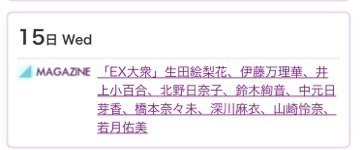
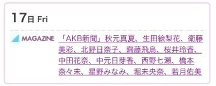
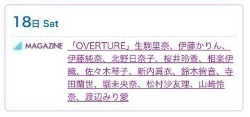
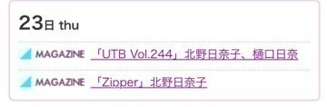
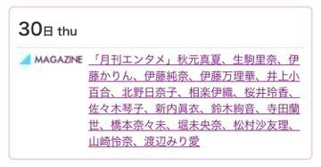
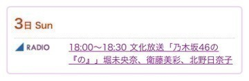
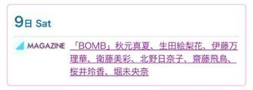
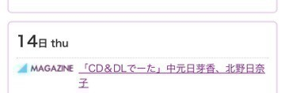
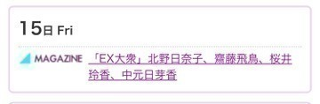
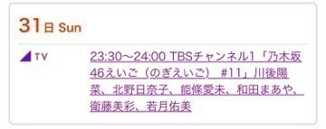

2016/0628Tue呼び出しボタン
みなさまこんばんは！
北野日奈子です(｡・・｡)！
最近、ブログもメールも
ちゃんと送れない！！！
未送信になってたり
いつまでもグルグルしてたり。。。
6月も残り数日で、
まだあの通知が私の携帯には
届いてないけどきっと、もう届く寸前なんだろうな。。。
ポケットWi-Fiを持ち歩かなきゃ！
3日間くらい持ち歩いてたんだけど
ちょっとかさばるから持ち歩かなくなっちゃった！！！
小さいWi-Fiを手に入れてやる！！！

笑ってる
ここ数日、夜ソファーで
寝そべってテレビ見ながらそのまま
寝ちゃうことが多いです(｡ρω-｡)。。。
いつのまにか寝落ちちゃう感じ
たまらなく気持ちいいですよね！！！
昨日は、バラエティー番組をみながら
寝ちゃいました！！！
みていたドラマが一通り最終回を終えて
今期のドラマも楽しみなのばかり！
みなさんの見る予定のドラマや番組はなんですかー？
ドラマとかの役で女優さんが悪い顔をしてるのをみると、
真似したくなります(｡・・｡)！
悪い顔！！！
得意だからね(｡・・｡)悪い顔(｡・・｡)
好きな曲を分けて
プレイリストをつくるのにはまってるの！
好きな曲だけをバーーーッと並べて
上から聞くのもいいけど、
曲を分けて聞くのもいいですよ！！！
そうだ！新曲のレコーディングをし終わったんですが、
終わった後にレコーディングのスタッフさんに
北野！上手くなったな！って言われて
嬉しかったー！！！
14枚目の不等号をレコーディングしてる時にも上手くなったな！アンダーライブで上手くなったんだな！って言ってもらえたんですが
今回もまた言ってもらえて
もっとがんばろー！と思いました！！！
歌もダンスも上手くなりたい！！！
夏のツアーでは、
選抜として成長している私を皆さんに見てもらえるようにがんばるぞー！！！
たくさん鏡の前と家族の前で練習して
表現力もつけられるようにがんばります！
UTBさん発売中です！
ひめたんのブログに私が載ってた♡
ぐふふふ♡うれしい♡
ひめたんとは、本当にこんなに仲良くなると思わなかった！！！
高校3年生の時にお互い
同じ高校に転校したんだけど、
転校したての頃は先輩だから、一緒にいるのが
緊張してたし全然話せなかったから
今こうやってなんでも話せる大好きな人の1人になっていてとても嬉しい！！！
サンクエトワールの名前を決める時に
どうせ一度きりっていう名前も候補にあがってたんだけど、
私たち2人の見た目のどうせ一度きり感が
好きです(｡・・｡)！笑
どうせ一度きりとネガティヴにくよくよしながら、根性と芯の強さで
自分たちの力で一度きりにしないかんじ！
ひめちゃんはきっと私はそんなに強くない！って言うだろうけど、
仲良くなってから一緒にアンダーで過ごした
1年間を思い出すと
ひめたんは本当に強くなったと思います！
どんどん弱気になっていく私たちが
お互いを助け合って奮い立たせて
本当に頑張ってきてよかったって
選抜発表で名前が呼ばれた時に
心から思いました！
今は選抜メンバーの先輩と
一緒の空間でお仕事してることが
本当に楽しくて刺激的で
その中に一緒に頑張ってきた
ひめちゃんがいることも嬉しくて
いろいろ思い出すといつも嬉しくなって
泣きそうになる！！！
毎日たのしいんだ！！！
もっとがんばります！
ひめちゃん
より目へたっぴ！
お知らせ！！！
6月





7月





それでは、今日はこのへんで！
あ！10月29日の幕張個別握手会で
仮装します！！
ハロウィン！！！！
なにしよう！
部数ごとに変えよう！！！
なにか、リクエストがあれば教えてください！
2016/06/28 23:54
コメント(366)
きいちゃんちゃん！！
おつかれー
サンエト復活希望(・ω・｀)
サンエト復活希望(・ω・｀)
毎日、楽しいと思えるのはいいことだね！
ハロウィンいーなー！
これは行くしかないな！！！
いつもブログ更新ありがとー！！！
たのしく見てます！笑
これからも頑張って！！
これは行くしかないな！！！
いつもブログ更新ありがとー！！！
たのしく見てます！笑
これからも頑張って！！
好きな曲を分けるって、どういう風に分けてるの？
最近、きいちゃん、寄り目にはまってるのかな？笑
水の宣伝のラクロスの画像見たよ！かわいかったです！
最近、きいちゃん、寄り目にはまってるのかな？笑
水の宣伝のラクロスの画像見たよ！かわいかったです！
通信制限辛い。。。
このブログも写真が読み込めない。。
がんばれ！！
このブログも写真が読み込めない。。
がんばれ！！
お疲れ様！！！
今日のテレ東音楽祭には出るのかな？
良かったらその事についてメールか755で教えて下さい！
あまりネガティブにならないようにね。
今日のテレ東音楽祭には出るのかな？
良かったらその事についてメールか755で教えて下さい！
あまりネガティブにならないようにね。
きいちゃんたくさん活躍してるね！がんばれ！
きいちゃーん！
ひめたんとの２ショット写メ最高です
昨日なかなかきいちゃんのブログが更新されず、落ち着かなかったw
今日も頑張って！
ひめたんとの２ショット写メ最高です
昨日なかなかきいちゃんのブログが更新されず、落ち着かなかったw
今日も頑張って！
ブログ更新ありがとー！！！
ポケットWi-Fi最近の小さいからそこまでかさばらなくない？？？笑笑
寝落ちいいよねー
好きなことしてて寝て起きるって最高！！！
今日もまた更新日じゃなくて確認した日になって28日になってないね
ポケットWi-Fi最近の小さいからそこまでかさばらなくない？？？笑笑
寝落ちいいよねー
好きなことしてて寝て起きるって最高！！！
今日もまた更新日じゃなくて確認した日になって28日になってないね
きいちゃーんかわいい
きいちゃん！！
ブログちゃんと読めてるよ♪ヽ(´▽｀)/
ブログちゃんと読めてるよ♪ヽ(´▽｀)/
うぇい！
ブログ更新ありがとう！
きいちゃんこんにちは！
ライブで新曲聴けるの楽しみにしてるね！
ひめたんとの写真はいつも楽しそうで見てるこっちも嬉しくなります(^ ^)アンダーライブは本当に貴重な経験だったんだね。その2人が一緒に選抜になって歌うところを見るのが今からわくわくしてます笑
仮装はドラキュラとか見たいです！
これからも応援してます^ ^
ライブで新曲聴けるの楽しみにしてるね！
ひめたんとの写真はいつも楽しそうで見てるこっちも嬉しくなります(^ ^)アンダーライブは本当に貴重な経験だったんだね。その2人が一緒に選抜になって歌うところを見るのが今からわくわくしてます笑
仮装はドラキュラとか見たいです！
これからも応援してます^ ^
こんにちはー！！！！
テレビ番組で絶対見るのは、
しゃべくりとイッテQかな！
あとは、クイズのは、よく見る！
ピラミッドダービーとかかな、最近だと！
やぱ、バナナマンが出てるのは
ついよく見ちゃう笑笑
バナナスクールとか、
そんなバカなマンとか〜〜面白い！
ドラマは、次は何見ようかなー！
そもそもどんなドラマがやるのか
知らないや！笑笑。とりあえず
第１話は録画して見るタイプだけど
きいちゃんはどーしてるのかなー。
あ！そーだ。新アニメが、なんか
面白そうなの多い！今までは、
アニメはそんなに見てなかったけど
今回は、結構見そうな気がする〜♪
きいちゃんは、アニメは見るの？
わーーぉ、告知多め！！！
嬉しいね！！！
乃木のの楽しみーーーー。
どんな新コーナーなんだろ。
落ちないキャップ。。。んーーー。
よっしゃーー！！！またね！
ㅤ『北野日奈子、応援しています！』
テレビ番組で絶対見るのは、
しゃべくりとイッテQかな！
あとは、クイズのは、よく見る！
ピラミッドダービーとかかな、最近だと！
やぱ、バナナマンが出てるのは
ついよく見ちゃう笑笑
バナナスクールとか、
そんなバカなマンとか〜〜面白い！
ドラマは、次は何見ようかなー！
そもそもどんなドラマがやるのか
知らないや！笑笑。とりあえず
第１話は録画して見るタイプだけど
きいちゃんはどーしてるのかなー。
あ！そーだ。新アニメが、なんか
面白そうなの多い！今までは、
アニメはそんなに見てなかったけど
今回は、結構見そうな気がする〜♪
きいちゃんは、アニメは見るの？
わーーぉ、告知多め！！！
嬉しいね！！！
乃木のの楽しみーーーー。
どんな新コーナーなんだろ。
落ちないキャップ。。。んーーー。
よっしゃーー！！！またね！
ㅤ『北野日奈子、応援しています！』
よし悪い顔リクエストしよ(´^ω^｀)
久しぶりにWiFiの話でたね笑
久しぶりにWiFiの話でたね笑
きぃちゃん♪
もうそろ自分も届きそうです...
早く新曲聴きたーい。もっと上手くなったきぃちゃんの歌声楽しみだなー♪
相変わらず、より目上手いね 笑
もうそろ自分も届きそうです...
早く新曲聴きたーい。もっと上手くなったきぃちゃんの歌声楽しみだなー♪
相変わらず、より目上手いね 笑
きぃちゃんお疲れ様〜！女優さんの悪い顔真似るのか〜相武紗季さんみたいな悪女役って大人の余裕があっていいと思うよ！
ひめたんの寄り目へたっぴ〜チョタイもへたっぴ〜（笑）
ハロウィンの仮装はヴァンパイアとか、少しホラーなやつがいいです！それで釣られたい…
質問→7月4日がお母さんの誕生日なんだけど、お花かお酒か、晩御飯をご馳走するどれにしようか悩んでる…日奈子ならどれ選ぶ？
ひめたんの寄り目へたっぴ〜チョタイもへたっぴ〜（笑）
ハロウィンの仮装はヴァンパイアとか、少しホラーなやつがいいです！それで釣られたい…
質問→7月4日がお母さんの誕生日なんだけど、お花かお酒か、晩御飯をご馳走するどれにしようか悩んでる…日奈子ならどれ選ぶ？
きいちゃんヤッホー！
長いブログありがとう！
今月来月の雑誌とかの情報載せてくれるとありがたい！サンクエトワールで新曲まだかな？
１回限りはもったいないなー
仕事楽しんでー
北野日奈子生誕委員ピロ
今日もファイテン！
長いブログありがとう！
今月来月の雑誌とかの情報載せてくれるとありがたい！サンクエトワールで新曲まだかな？
１回限りはもったいないなー
仕事楽しんでー
北野日奈子生誕委員ピロ
今日もファイテン！
きいちゃんのブログ本当に感動した！
きいちゃんが間違いなく実力で勝ち取った選抜だし、本当に頑張ってほしい。
その選抜に入るタイミングがずっと一緒に頑張ってきたひめたんでよかったね。
僕たち含めたサンエトファンの夢はサンエトを選抜メンバーのユニットとして復活させることだから！！
きいちゃん大好きです(^^)
これからも応援してます！
きいちゃんが間違いなく実力で勝ち取った選抜だし、本当に頑張ってほしい。
その選抜に入るタイミングがずっと一緒に頑張ってきたひめたんでよかったね。
僕たち含めたサンエトファンの夢はサンエトを選抜メンバーのユニットとして復活させることだから！！
きいちゃん大好きです(^^)
これからも応援してます！
こんにちは。
疲れてるんだね。
大変だね。
身体壊すなよ。
べつに新しい番組で気になるのはないけど…。
悪い顔得意？
はい、悪い顔やって。
疲れてるんだね。
大変だね。
身体壊すなよ。
べつに新しい番組で気になるのはないけど…。
悪い顔得意？
はい、悪い顔やって。
こんにちは(*ﾟ▽ﾟ)ﾉ
ブログまてて思ったけど、最近きいちゃん乃木坂の中でも1番と言っていいほど、雑誌とかに載ってるね！！
おめでとう(((o(*ﾟ▽ﾟ*)o)))
10月29日の個握行けないから10月23日の個握でも仮装してほしいなぁーー´ ³`)ﾉ ～♡
ブログまてて思ったけど、最近きいちゃん乃木坂の中でも1番と言っていいほど、雑誌とかに載ってるね！！
おめでとう(((o(*ﾟ▽ﾟ*)o)))
10月29日の個握行けないから10月23日の個握でも仮装してほしいなぁーー´ ³`)ﾉ ～♡
選抜仕事すっごい楽しそうだね！！
ほんと頑張って良かったね！！
俺もいろんなところ日奈子見れて、
応援してきてきてほんと良かったよ！！
これからも応援するけど笑
JRの自販機に日奈子が貼られるのが、
今から待ち遠しいよ〜
歌褒められたんだ！おめでとう！！
東北ツアーでも日奈子のソロパート好きだったからね！！
不等号とかロマとか！
新曲楽しみだよ〜
ハロウィンはチャイナドレスで大人っぽくしてみたらどうかな？！
いつもチャイナドレスって言ってごめんね笑
日奈子が着てるとこ見たいな〜
今日のテレ東音楽祭は家に居れないけど
録画を見るよ！！日奈子でるのかな？？
ほんと頑張って良かったね！！
俺もいろんなところ日奈子見れて、
応援してきてきてほんと良かったよ！！
これからも応援するけど笑
JRの自販機に日奈子が貼られるのが、
今から待ち遠しいよ〜
歌褒められたんだ！おめでとう！！
東北ツアーでも日奈子のソロパート好きだったからね！！
不等号とかロマとか！
新曲楽しみだよ〜
ハロウィンはチャイナドレスで大人っぽくしてみたらどうかな？！
いつもチャイナドレスって言ってごめんね笑
日奈子が着てるとこ見たいな〜
今日のテレ東音楽祭は家に居れないけど
録画を見るよ！！日奈子でるのかな？？
夏どっか行きたいところあるの？
きいちゃんは褒められると伸びるタイプかな？
歌のこと褒められると嬉しいよね。
きいちゃんの歌声はとても魅力的だと思います。
武道館で聴いた「水玉模様」は本当によかったです。
きいちゃんとひめたんの関係性は、乃木坂46の中でも特に面白いと思います。
お互いに刺激し合える関係って、なかなか無いと思うから、そういう関係性の持てるメンバーに恵まれてよかったね。
EX大衆の対談も楽しみです。
選抜のお仕事頑張ってね！
歌のこと褒められると嬉しいよね。
きいちゃんの歌声はとても魅力的だと思います。
武道館で聴いた「水玉模様」は本当によかったです。
きいちゃんとひめたんの関係性は、乃木坂46の中でも特に面白いと思います。
お互いに刺激し合える関係って、なかなか無いと思うから、そういう関係性の持てるメンバーに恵まれてよかったね。
EX大衆の対談も楽しみです。
選抜のお仕事頑張ってね！
ひめたんと仲良くなれたんだ。
よかったね。
新しいパワーで進化した乃木坂を見せてね。
よかったね。
新しいパワーで進化した乃木坂を見せてね。
お疲れ様ー！
UTB見たけどいつものきぃちゃんと違う雰囲気で凄く良かった！
UTB見たけどいつものきぃちゃんと違う雰囲気で凄く良かった！
ブログの更新ありがとう。
ハロウィンの仮装は、ひなデビル見ないな？
ハロウィンの仮装は、ひなデビル見ないな？
EX大衆飛鳥ちゃんとの楽しみです！
15thも楽しみにしてます！
頑張ってください応援してます！！
15thも楽しみにしてます！
頑張ってください応援してます！！
ブログ更新ありがとう〜通信制限手前なのか笑
凄い忙しそうだし良いことだね！でも体調には気をつけてね！
おれも夜中2時ぐらいに帰ってきてTV観たらそのまま寝落ちしちゃう笑笑
早く15thの楽曲どういうのか聴きたい〜きいちゃんダンスも歌も上手くなったよね！楽しみだヾ(*´∀｀*)ﾉ
仮装して握手会楽しそうだね！悪い顔得意ならドラキュラとかしてほしい笑
今日も天気悪いけど頑張ろうd(・｀ω´・d*)"
凄い忙しそうだし良いことだね！でも体調には気をつけてね！
おれも夜中2時ぐらいに帰ってきてTV観たらそのまま寝落ちしちゃう笑笑
早く15thの楽曲どういうのか聴きたい〜きいちゃんダンスも歌も上手くなったよね！楽しみだヾ(*´∀｀*)ﾉ
仮装して握手会楽しそうだね！悪い顔得意ならドラキュラとかしてほしい笑
今日も天気悪いけど頑張ろうd(・｀ω´・d*)"
きいちゃんおつかれーーーぃ！
笑顔最強だなおい…！笑
きいちゃんひめたんといえばやはり最近のアンダーを引っ張ってきた2人であり同時に15thで選抜入りした盟友だね！
お互い色々な事を経験してきて悔しい苦しい想いもしただろうし、素晴らしい光景も見てきただろうからより選抜での仕事で良いものが作れる気がします！
これからも体調に気をつけてがんばれひなこ！
笑顔最強だなおい…！笑
きいちゃんひめたんといえばやはり最近のアンダーを引っ張ってきた2人であり同時に15thで選抜入りした盟友だね！
お互い色々な事を経験してきて悔しい苦しい想いもしただろうし、素晴らしい光景も見てきただろうからより選抜での仕事で良いものが作れる気がします！
これからも体調に気をつけてがんばれひなこ！
七瀬が昔やった魔女がいいです
日奈子、おはよう
月末だもんね…笑
気長にメール待ってますわ
新曲楽しみだよ ポジション的にひめたんとか未央奈と同じパートなのかな
ポジション的にひめたんとか未央奈と同じパートなのかな 早く聞きたいよー
早く聞きたいよー
月末だもんね…笑
気長にメール待ってますわ
新曲楽しみだよ
こんにちわ、ヒナコ。
周りから認められる位、頑張って来たんだよね。嬉しいよ。
サンエト、初めて見た時から大好きになって、主人と二人、川崎ラゾーナまで見に行ったなぁ。
やっぱり復活してほしい！
今は二人で選抜にいてくれてるから、本当に嬉しいよ。
雑誌も多いね、チェックしなきゃ。
周りから認められる位、頑張って来たんだよね。嬉しいよ。
サンエト、初めて見た時から大好きになって、主人と二人、川崎ラゾーナまで見に行ったなぁ。
やっぱり復活してほしい！
今は二人で選抜にいてくれてるから、本当に嬉しいよ。
雑誌も多いね、チェックしなきゃ。
更新ありがとう
15枚目の製作が忙しいのに、ブログを更新してくれるきぃちゃんを尊敬してるよ
きぃちゃんの笑顔に元気もらってます。
ありがとう
15枚目の製作が忙しいのに、ブログを更新してくれるきぃちゃんを尊敬してるよ
きぃちゃんの笑顔に元気もらってます。
ありがとう
きいちゃんの悪い顔も可愛いけど、屈託のない笑顔が１番好き！！
まじか、10/29ハロウィンか…
行かないと…
コスプレ斬新なやつがいいよね、じゃあゴボウだね…よろしく…笑
まじか、10/29ハロウィンか…
行かないと…
コスプレ斬新なやつがいいよね、じゃあゴボウだね…よろしく…笑
きぃちゃん今日もかわいい！
歌うまくなってよかったね！
大好き！
歌うまくなってよかったね！
大好き！
きいちゃんお疲れ。
TVを見ながら寝落ち…最高の一時だね。
仮装?ハロウィン?……行きたい。
TVを見ながら寝落ち…最高の一時だね。
仮装?ハロウィン?……行きたい。
ブログ更新お疲れ様です！！
僕は乃木坂のファンになってやっと1年が経つくらいだから、あんましおひなさんやひめたんが過ごしていてつらい時期をあんまし知らないですが、二人の頑張りはとても分かるし、だからとても応援しがいのある二人だから、乃木坂で推してるメンバーです。その証拠におひなさんは歌やダンスの技術がとても上がっているとよく聞きますし、モデルのお仕事も頑張っています。
だから、僕はおひなさんがセンターになるときには隣にひめたんと飛鳥ちゃんがいる夏の大三角形の三人かフロントなのが個人的に理想ですし、いつか叶うとも思ってます！それが叶うまで頑張ってくださいね！！応援しています！！
今日のお仕事も頑張ってくださいね！！
僕は乃木坂のファンになってやっと1年が経つくらいだから、あんましおひなさんやひめたんが過ごしていてつらい時期をあんまし知らないですが、二人の頑張りはとても分かるし、だからとても応援しがいのある二人だから、乃木坂で推してるメンバーです。その証拠におひなさんは歌やダンスの技術がとても上がっているとよく聞きますし、モデルのお仕事も頑張っています。
だから、僕はおひなさんがセンターになるときには隣にひめたんと飛鳥ちゃんがいる夏の大三角形の三人かフロントなのが個人的に理想ですし、いつか叶うとも思ってます！それが叶うまで頑張ってくださいね！！応援しています！！
今日のお仕事も頑張ってくださいね！！
きぃちゃん、更新ありがとう
笑顔のきぃちゃんかわいい！
お知らせの雑誌全部見たよ
どれも良かった！
EX大衆は連続なんだね
ひめたん、確かに寄り目下手だね
きぃちゃんはやっぱり上手い！
今度の握手会でやってほしい
生誕祭行くからね〜
あと10月の幕張もとるから！
日奈子しか！
笑顔のきぃちゃんかわいい！
お知らせの雑誌全部見たよ
どれも良かった！
EX大衆は連続なんだね
ひめたん、確かに寄り目下手だね
きぃちゃんはやっぱり上手い！
今度の握手会でやってほしい
生誕祭行くからね〜
あと10月の幕張もとるから！
日奈子しか！
きいちゃん更新ありがとう！！！
わかる！！ゴロゴロしてる間に寝た時って
すんごい心地よく寝れるよね！！でも最近
コンタクト付けたまんま寝ちゃうこと多いから
次の日、外出るのが困難…f^_^;)
ドラマはフジテレビのしか今の所は
分からないな〜…。でもNHKの朝ドラいいよ！！
お仕事忙しくて見れないと思うけど…。
15枚目、すんごい楽しみ！！
買ったらきいちゃんが上手くなったという歌声を
存分に聴き浸ろう٩( ᐛ )و笑
ひめたんと仲良くしてる写真見ると
2人とも可愛くてすんごい癒される♪(´ε｀ )
まだまだいっぱい言いたいことあるけど
ここいらでやめとこ。。笑
引き続きお仕事頑張って٩( ᐛ )و応援してるよ！！！
わかる！！ゴロゴロしてる間に寝た時って
すんごい心地よく寝れるよね！！でも最近
コンタクト付けたまんま寝ちゃうこと多いから
次の日、外出るのが困難…f^_^;)
ドラマはフジテレビのしか今の所は
分からないな〜…。でもNHKの朝ドラいいよ！！
お仕事忙しくて見れないと思うけど…。
15枚目、すんごい楽しみ！！
買ったらきいちゃんが上手くなったという歌声を
存分に聴き浸ろう٩( ᐛ )و笑
ひめたんと仲良くしてる写真見ると
2人とも可愛くてすんごい癒される♪(´ε｀ )
まだまだいっぱい言いたいことあるけど
ここいらでやめとこ。。笑
引き続きお仕事頑張って٩( ᐛ )و応援してるよ！！！
きいちゃんとひめたんのコンビすきだよー！
きいちゃんにミッキーの仮装してほしー
きいちゃんにミッキーの仮装してほしー
きぃちゃんやっぱり毎日忙しいんやね。無理はせんとね！
次のドラマはやっぱり「死幣」かな！SKEのじゅりなが主演で元AKBのりっちゃんも出演するからめっちゃ楽しみ！ホラー系らしいけどきぃちゃんはそういう系得意？
ひめたんと仲良くなれて本当に良かったね！
握手会の仮装は「アリス」とかをして欲しい！
更新ありがとう！
次のドラマはやっぱり「死幣」かな！SKEのじゅりなが主演で元AKBのりっちゃんも出演するからめっちゃ楽しみ！ホラー系らしいけどきぃちゃんはそういう系得意？
ひめたんと仲良くなれて本当に良かったね！
握手会の仮装は「アリス」とかをして欲しい！
更新ありがとう！
ブログ締めのあいさつ
明日も一日ハッピーな気持ちでお過ごし下さい!
明日も一日ハッピーな気持ちでお過ごし下さい!
こんにちは
日奈子さん
いつの間にか寝入ってしまう？？
日奈子さん疲れてるんだよ！！
これからの忙しさを考えたら、それも仕方ないけどちゃんと寝床で寝るようにしよう
これから体力使うからね
どっちかと言うとひめさん贔屓のおじさんは、日奈子さんがそう言ってくれて嬉しいです。ひめさんとは1回握手していただきました！！あ！初めてさんだ！ってぴょんぴょん飛んで出迎えてくれました。その時に日奈子さんが右側に見えました m(__)m
m(__)m
ひめさんも日奈子さんに励まされて感謝すると言ってたし、それと同時にライバルとしても脅威を感じると選抜発表前に言ってました。言い方を変えたらそれだけ日奈子さんに力がついてきたってことなんじゃないかな？
おじさんはこのひめさんの発言から、ひめさんと日奈子さんの選抜入りと他の人に言うようにしました。
当たりました
ひめさんと日奈子さん
2人とも褒めて伸びるタイプだと思います。
英語も頑張って(^o^)
乾杯を英語では何と言う？？
10月29日は券を持ってます。日奈子さんに応募したらハズレが多くなった。売れてきたってこと。早く売り切れるといいね！！
おじさんは吸血鬼がいいです
そんな感じで頑張れ！
Do your best！！
日奈子さん
いつの間にか寝入ってしまう？？
日奈子さん疲れてるんだよ！！
これからの忙しさを考えたら、それも仕方ないけどちゃんと寝床で寝るようにしよう
これから体力使うからね
どっちかと言うとひめさん贔屓のおじさんは、日奈子さんがそう言ってくれて嬉しいです。ひめさんとは1回握手していただきました！！あ！初めてさんだ！ってぴょんぴょん飛んで出迎えてくれました。その時に日奈子さんが右側に見えました
ひめさんも日奈子さんに励まされて感謝すると言ってたし、それと同時にライバルとしても脅威を感じると選抜発表前に言ってました。言い方を変えたらそれだけ日奈子さんに力がついてきたってことなんじゃないかな？
おじさんはこのひめさんの発言から、ひめさんと日奈子さんの選抜入りと他の人に言うようにしました。
当たりました
ひめさんと日奈子さん
2人とも褒めて伸びるタイプだと思います。
英語も頑張って(^o^)
乾杯を英語では何と言う？？
10月29日は券を持ってます。日奈子さんに応募したらハズレが多くなった。売れてきたってこと。早く売り切れるといいね！！
おじさんは吸血鬼がいいです
そんな感じで頑張れ！
Do your best！！
1度きりには絶対にならないでほしい(>_<)
モバメとブログは送ろうとする気があるならそれでOK(^^)
ドラマは99.9とか観てたかな
最近バイトが終わるの遅くなったりしてあんまり見れてなかった(>_<)
スタッフの人きいちゃんの成長分かってくれてて嬉しいね！
もっと成長して驚かせよう(^^)
モバメとブログは送ろうとする気があるならそれでOK(^^)
ドラマは99.9とか観てたかな
最近バイトが終わるの遅くなったりしてあんまり見れてなかった(>_<)
スタッフの人きいちゃんの成長分かってくれてて嬉しいね！
もっと成長して驚かせよう(^^)
日奈子ちゃんブログありがとう。
本当に良かったです！(TT)ライヴ見たら(；_；)かも。。ワクワクしてます(笑)
歌もダンスもど素人の自分には、ヘタもうまいもたいしてわかりませんが心にくるもの、残るもの！それが自分にとって１番です。気持ちで伝わればそれが最高です！！
ヒメヒナ♡大好き！がんばってね(♡*′ω`*)
本当に良かったです！(TT)ライヴ見たら(；_；)かも。。ワクワクしてます(笑)
歌もダンスもど素人の自分には、ヘタもうまいもたいしてわかりませんが心にくるもの、残るもの！それが自分にとって１番です。気持ちで伝わればそれが最高です！！
ヒメヒナ♡大好き！がんばってね(♡*′ω`*)
きいちゃーん！！毎日ブログお疲れ様～～！
ポケットWi-Fiいいなぁー持ってないんだよなぁーー羨ましい！！！
ひめたんときいちゃんで切磋琢磨してるんですな！！いい関係性を持ててよかったね！同じ高校だったのは意外だったなぁ笑
きいちゃんのプレイリスト最初の曲は何？？おれは「僕のいる場所」かな！あの曲一番好きなんだよね～～(⌒∇⌒)ノ
じゃあ今日の雑学的なものね！
「サボテンのトゲは葉っぱが進化したもの」です！
知ってた？？これできいちゃんも雑学王ですな！！笑
それじゃまた！！(・ε・｀ )
ポケットWi-Fiいいなぁー持ってないんだよなぁーー羨ましい！！！
ひめたんときいちゃんで切磋琢磨してるんですな！！いい関係性を持ててよかったね！同じ高校だったのは意外だったなぁ笑
きいちゃんのプレイリスト最初の曲は何？？おれは「僕のいる場所」かな！あの曲一番好きなんだよね～～(⌒∇⌒)ノ
じゃあ今日の雑学的なものね！
「サボテンのトゲは葉っぱが進化したもの」です！
知ってた？？これできいちゃんも雑学王ですな！！笑
それじゃまた！！(・ε・｀ )


ブログ更新ありがとね！
待ってましたぁぁー♪♪
いきなりですが問題です。
デデン！
x^2+10x+24=(x+■)(x+□)
■と□に入る数字を答えよ。
今日も１日、頑張ろぃ！
ㅤ『北野日奈子、応援しています！』